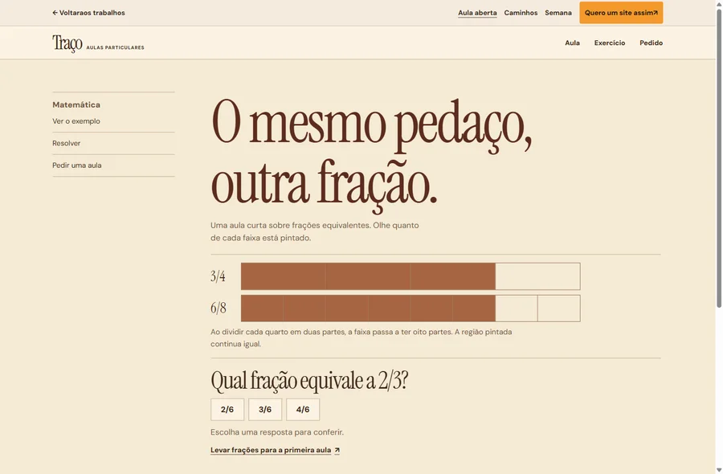
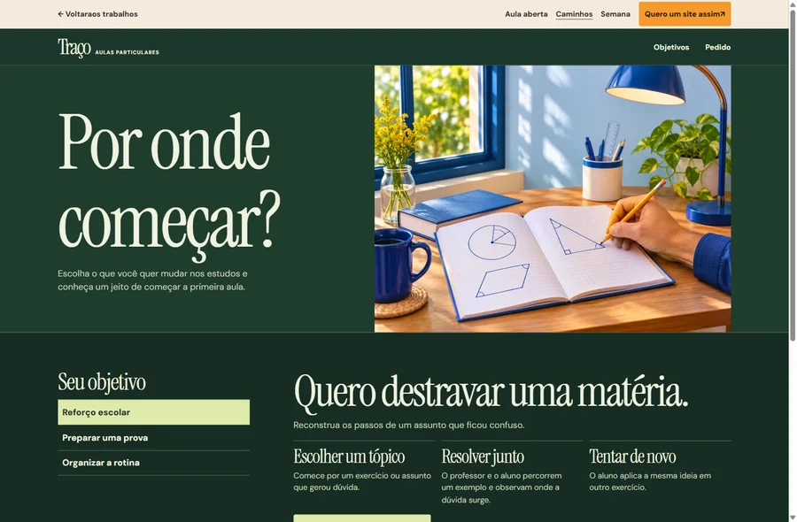
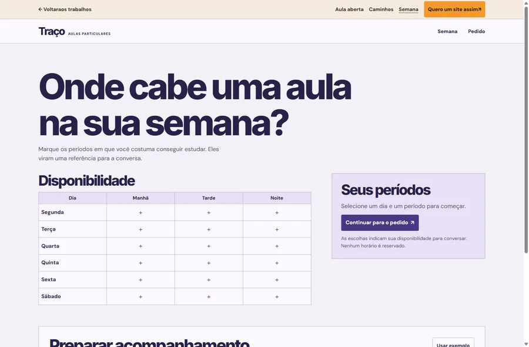

Aula aberta
Resolva um exercício de frações e veja a explicação de cada alternativa.
Abrir demonstraçãoTrês portas para conhecer um acompanhamento escolar: uma aula, um objetivo ou uma semana.

Resolva um exercício de frações e veja a explicação de cada alternativa.
Abrir demonstração
Escolha entre reforço, prova e rotina para explorar um caminho de estudo.
Abrir demonstração
Marque períodos na semana e leve sua disponibilidade ao pedido.
Abrir demonstração